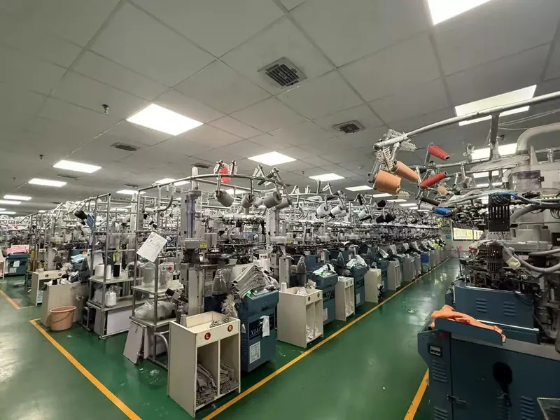

What is the starting MOQ for custom socks?
GoodStartSocks has a standard starting minimum order quantity of 500 pairs for custom sock projects. This starting point is designed for B2B orders such as new brand collections, team programs, retail assortments, corporate gifts and promotional projects.
MOQ is not only about the number of pairs. A workable production plan also depends on the sock construction, selected yarns, colour count, logo method, size breakdown, labels and packaging. Sharing those details early helps avoid a quote that later needs to be reworked.
| Standard starting MOQ | 500 pairs |
|---|---|
| Sample preparation guide | About 3–7 days |
| Bulk-production guide | About 30 days after sample approval |
| Factory location | Zhuji, Zhejiang, China |
| Production resources | Approximately 50 knitting machines |
When can the final MOQ change?
The final quantity can vary by specification. Rather than promising a single MOQ for every design, we review the production details before confirming the order plan. The most useful details to send are:
- Sock type and height: for example ankle, crew, knee-high, sports, grip or compression.
- Artwork: logo placement, pattern repeat, colour references and any special finishing.
- Material direction: such as cotton blend, bamboo fibre, wool blend or performance yarn.
- Size range: one size or multiple size groups, including the expected pair split.
- Packaging: labels, bands, hang tags, bags, boxes or gift-ready presentation.
- Delivery need: destination and target date.
For a visual overview of custom options, see our custom sock materials, logos and packaging page. If you are still deciding on a style, browse the custom sock product range.
Plan the sample before bulk production
Sampling is the step where a design becomes a production reference. A sample can help confirm material feel, sock height, fit, colour direction, logo placement and the construction before the bulk order is approved. Our usual guide for sample preparation is about 3–7 days, although final timing depends on the project details.
Before approving a sample, compare it with the intended footwear and packaging. Review it laid flat and worn, and keep an approved sample together with the measurement and artwork details for repeat orders. Our sock heights guide explains why the selected height and measurement method should be agreed before sampling.
Set a realistic production schedule
After the sample is approved, the typical bulk-production guide is about 30 days. This is a planning guide, not a fixed promise: the final schedule depends on the construction, materials, artwork, size breakdown, packaging, order quantity and production schedule. Allow extra time for design confirmation, sample feedback, packing approval and shipping arrangements.
GoodStartSocks is based in Zhuji, Zhejiang, China. Learn more about the factory-direct process in our Zhuji custom sock manufacturing profile, or view packaging and presentation examples for project-planning inspiration.
Request a practical project review
To discuss your MOQ and production plan, send your logo or reference image, intended sock type, estimated quantity, material preference, size range, packaging idea, delivery destination and target date. We can review the details with you before you commit to sampling or bulk production.
Discuss Your Custom Sock Project →